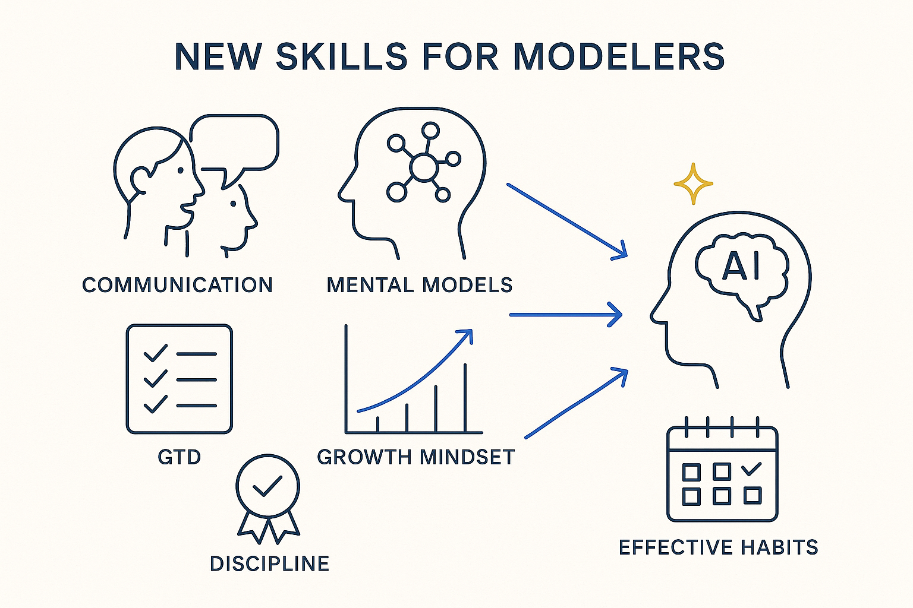

Modeling now takes more than data-modeling theory — it takes communication, mental models, GTD, growth mindset, discipline and effective habits, because AI needs our output structured to help back.

> Modeling now takes more than data-modeling theory — it takes communication, mental models, GTD, growth mindset, discipline and effective habits, because AI needs our output structured to help back.
We still need the classics: data-modeling books, and the hard-won discussions on Data Vault, dimensional modeling, 3NF, and the conceptual, logical and physical layers. That knowledge doesn’t go away. But on its own it is no longer enough. The modeler’s job now spans communication, mental models, GTD, a growth mindset, and plain discipline — the skills that turn a good structural idea into something a team and a machine can both use.
The reason is concrete: AI needs our output in a structured way. Effective habits — writing precise minutes of meeting, capturing interview results, keeping structured notes — are not bureaucratic overhead; they are the input format the AI runs on. A habit like reliably producing minutes is worth more than one more notation, because it is what makes the next step possible. (See *The Power of Habit*, Charles Duhigg — the discipline is a habit you install, not willpower you spend.)
Once the record is structured, the payoff compounds. AI can prepare the meeting from precise minutes, interview results, structured notes, and even email and chat conversations — so when people finally sit down to talk, the conversation is focused and optimized, not spent re-establishing what was already decided. No waiting time. The meeting becomes the moment of decision, not the moment of catch-up. And feedback runs through all of it — the loop that keeps the structure honest.
Where it lives: the attitude layer of Breakthrough Modeling — the skillset that makes structure pay off.